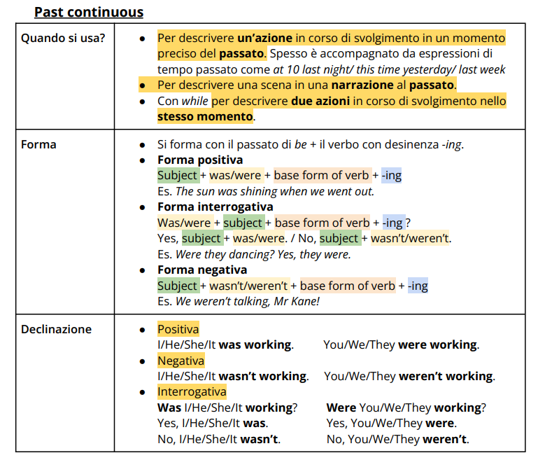
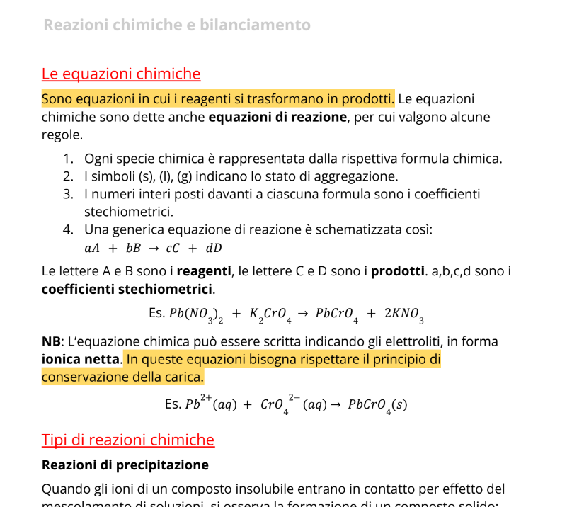
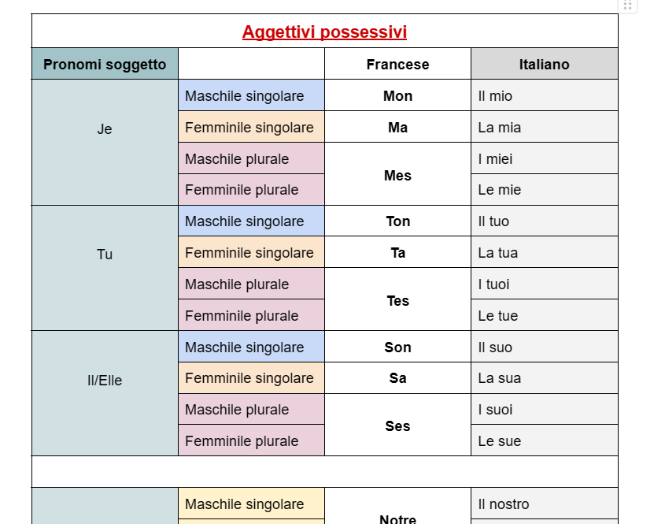
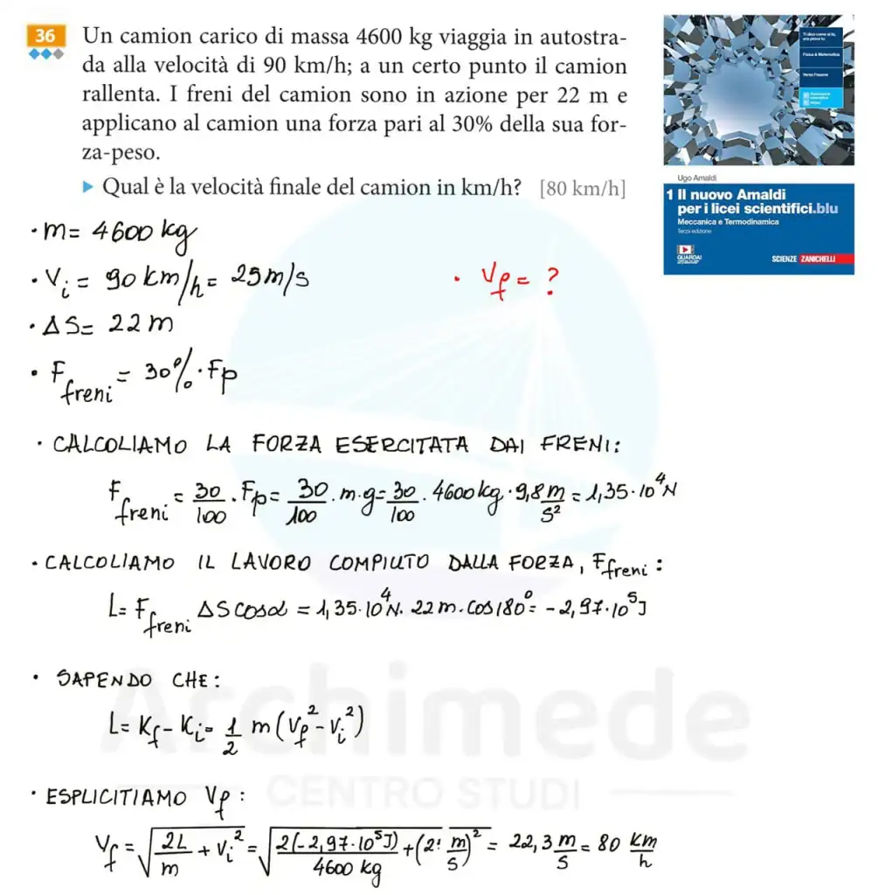

Schemi
Sintetici o dettagliati, per organizzare i concetti e ritrovare i passaggi importanti.
Schemi, esercizi, riassunti e mappe concettuali realizzati sulle tue esigenze.
Un argomento complesso diventa più chiaro quando le informazioni sono organizzate bene. Prepariamo strumenti per comprendere, ripassare e affrontare lo studio con maggiore ordine, partendo dalla materia, dagli argomenti e dalle tue esigenze.
Il materiale può accompagnare il tuo percorso a scuola o all’università, anche a fine percorso, e tenere conto del tuo modo di apprendere. Scegliamo insieme la forma più utile per il tuo obiettivo.
Sintetici o dettagliati, per organizzare i concetti e ritrovare i passaggi importanti.
Risoluzioni accompagnate da commenti e spiegazioni dei passaggi, per capire come si arriva al risultato.
Di singoli paragrafi, capitoli o intere unità, per mettere a fuoco le informazioni essenziali.
Collegamenti visivi tra idee e concetti, pensati anche per studenti con esigenze di apprendimento diverse.
Tabelle, spiegazioni ed evidenziazioni: alcuni esempi dal nostro lavoro. Seleziona un’immagine per aprirla intera.




Indicaci materia, argomenti, tipo di materiale e quando ti serve. Il team dedicato valuterà la richiesta e ti risponderà con un preventivo. Il modulo richiede l’accesso con un account Google.
Richiedi un preventivo ↗Oppure via email ↗Cerchi contenuti liberamente consultabili? Esplora le risorse gratuite.